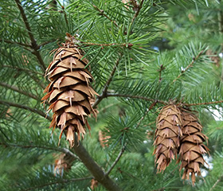

Pseutotsuga menziesii o abete di Douglas
La Douglasia é una conifera sempreverde diffusa nelle regioni costiere del Nord America, tipica della catena delle Cascade. Il suo habitat varia dal livello del mare sino ad un'altezza di 1800 metri.
Fu importata in Europa a metà del 1800 e si adattò perfettamente agli ambienti solitamente colonizzati dal castagno ma in parte anche dalla faggeta.
É una pianta dal rapido accrescimento, che ne consente un ampio sfruttamento e impiego nella produzione legnosa; si adatta a qualsiasi terreno.